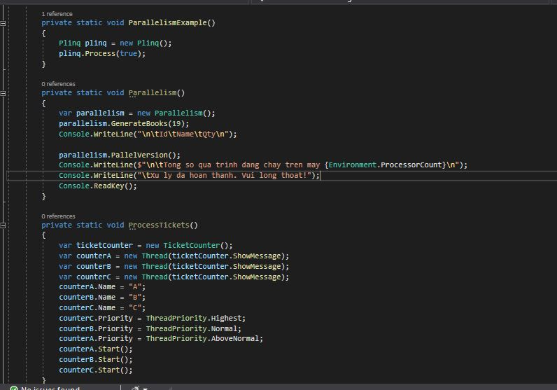
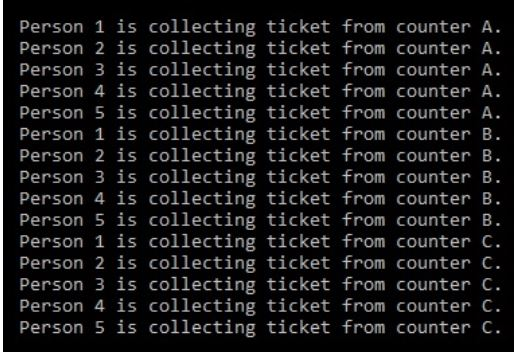
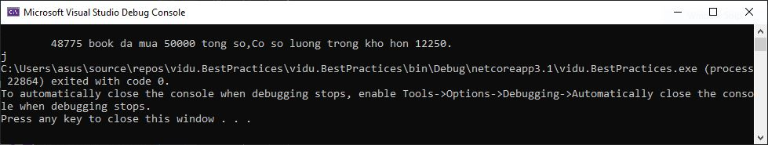
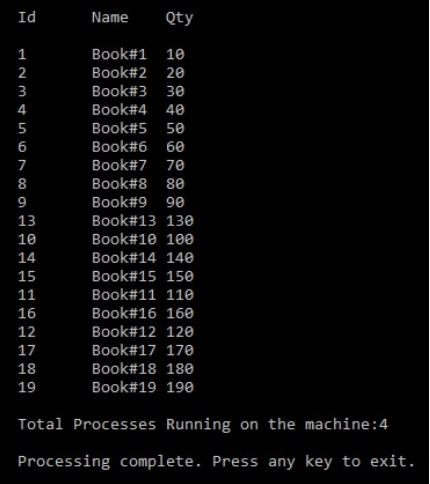
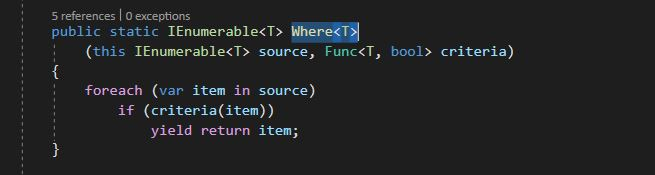

Concurrent Programming in .NET Core
In the previous chapter (Chapter 7, Implementing Design Patterns for Web Applications - Part 2), we created a sample web application with the help of various patterns for the web. We adapted authorization and authentication mechanisms to secure a web application and discussed Test-driven development (TDD) to make sure that our code has been tested and is working.
This chapter will discuss the best practices to adopt while performing concurrent programming in .NET Core. In the upcoming sections of this chapter, we will learn about the design patterns relevant for well-organized concurrency in C# and .NET Core applications. The following topics will be covered in this chapter:
- Async/Await – Why is blocking bad?
- Multithreading and asynchronous programming
- Concurrent collectionsConcurrency in the real world
- Patterns and practices – TDD and Parallel LINQ
Concurrency in the real world
Concurrency is a part of our life: it exists in the real world. When we are discussing concurrency, we are referring to multitasking.
True parallelism is not possible on a single CPU machine because tasks are not switchable, as the CPU has a single core. It is only possible on a machine with multiple CPUs (multiple cores). In simple terms, concurrent programming involves two things:
- Task management: Managing/distributing work units to available threads.
- Communication: This sets up the initial parameter of the task and gets the results.
- Concurrency is when two or more tasks start, run, and complete in overlapping time periods.
- Parallelism is when two or more tasks run at the same time.

Multithreading and asynchronous programming


Patterns and practices – TDD and Parallel LINQ
  DiscountModel
- ProductId: This represents the ID of a product.
- ProductName: This represents the name of a product.
- Price: This contains the actual price of the product. The actual price is before any discount, taxes, and so on.
- Discount: This contains the percentage of a discount such as 10 or 3. A valid discount rate should not be negative, equal to zero, or more than 100% (in other words, it should not be more than the actual cost of the product).
- Amount: This contains the product value after any discount, taxes, and so on.
Requirements
MVP is the smallest set of features of an application that can still be released and have enough value for a user base. After several meetings and discussions between management and business analysts, a list of requirements was produced to enhance our FlixOne web application. The high-level requirements are as follows: Implementation of pagination: Currently, all page listings are not paginated. It is really challenging to view items with large page counts by scrolling down or scrolling up the screen. Discount Rates: Currently, there is no provision to add or see the various discount rates for a product. The business rules for discount rates are as follows:
- A product can have more than one discount rate.
- A product can only have one active discount rate.
- A valid discount rate should not be a negative value and should not be more than 100%
Strategy pattern and functional programming
The strategy pattern is one of the important patterns of Gang of Four (GoF) patterns. This falls under the behavioral patterns category and is also known as a policy pattern. The strategy pattern is one of the important patterns of Gang of Four (GoF) patterns. This falls under the behavioral patterns category and is also known as a policy pattern. Consider the following code that shows the implementation of HOFs in functional programming:Consider the following code that shows the implementation of HOFs in functional programming: 